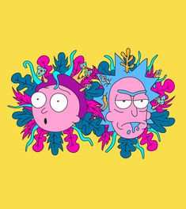

<main>
  <!--  -->
  <div class="info">
    <!-- <h2>
      Rick and Morty
    </h2>
    <p>Rick Sánchez es la definición exacta de "científico loco". Es alcohólico, es un genio, es irresponsable y está loco. Rick acaba de mudarse a casa de su hija Beth y allí recuerda que tiene un nieto llamado Morty. Sin preguntar a nadie, decide que va a obligarle a que le acompañe a todo tipo de aventuras para que el chico se vuelva inteligente como él y no se convierta en un idiota como Jerry, padre de Morty y yerno de Rick.

      Así, Rick y Morty comienzan a vivir aventuras intergalácticas a pesar de que la familia no quiere que lo sigan haciendo. Poco a poco tienen que intentar encontrar un equilibrio entre su vida familiar y sus viajes a través del espacio y por distintas realidades paralelas, algo que no es fácil para el pequeño Morty que es incapaz de tener una vida normal al margen de su abuelo.
    </p> -->
  </div>
</main>
